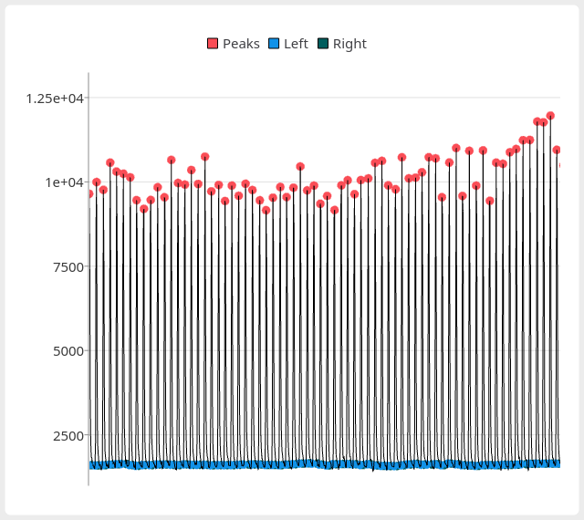
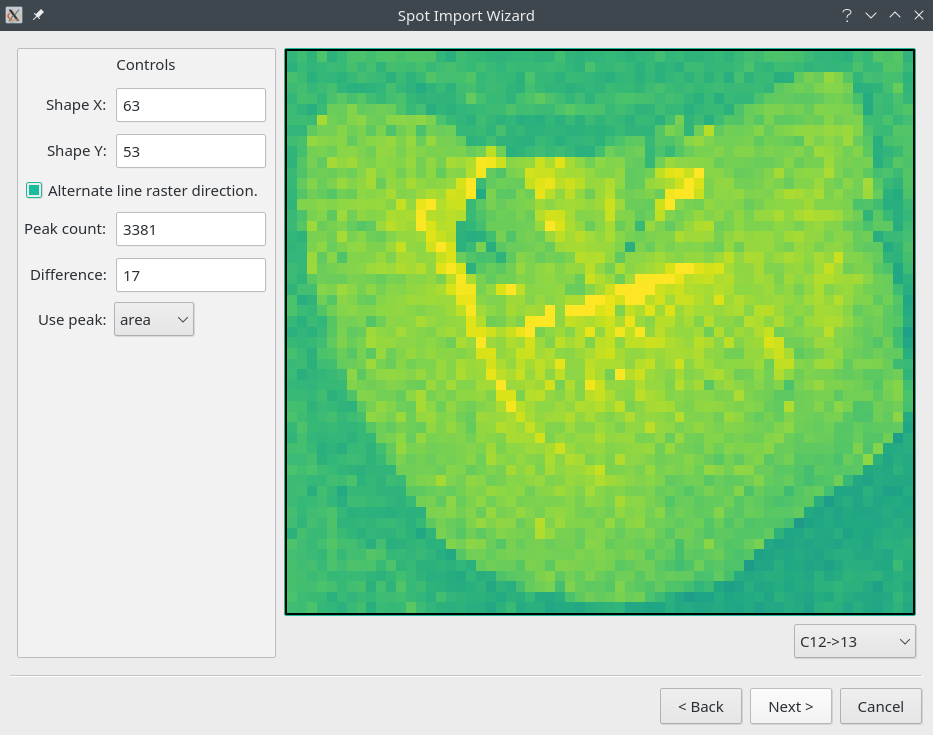

Import Wizard
File -> Import -> Import Wizard
Vendor |
Software |
Format |
Tested With |
|---|---|---|---|
Agilent |
Mass Hunter |
.b directory |
7500,7700,8900 |
PerkinElmer |
.xl files |
||
Thermo |
Qtegra |
.csv |
iCAP RQ |
pew² supports drag-and-drop of specific formats (Drag-and-drop formats supported by pew².) and text-images with the extension ‘.csv’ or ‘.txt’. If drag-and-drop of a format is not supported or if special import requirements are needed then the import wizard should be used. The Import Wizard allows users to provide specific options (Format options available in the Import Wizards.) when importing data. The wizard consists of three pages: format selection, path and options, and laser parameters. For programs that export lines as a directory of separate files the ‘.csv’ import option should be used.
Format |
Option |
Description |
|---|---|---|
Agilent |
Data File Collection |
The method by which .d files are found. If batch logs are malformed use Alphabetical. |
Read names from Acq. |
Read isotope names from the method. |
|
CSV Lines |
Delimiter |
Delimter between values. |
Header / Footer Rows |
Number of rows in file before / after the data. |
|
File Regex |
Regex used to find file names. |
|
Sorting |
Alphabetical sorts normally. Numerical sorts by numbers in the name only. Timestamp using sortkey in strftime format. |
|
Text Image |
Isotope Name |
Name of imported element. |
Thermo iCap |
Export Format |
Data in rows or columns. |
Delimiter |
Delimter between values. |
|
Decimal |
Character used as decimal place. |
|
Use Analog |
Import analog data instead of counts. |
Parameters from Laser configuration import parameters. will be automatically read from imports if available but otherwise can be manually entered. Laser pixel aspect and sizes are defined by these parameters, with speed * scantime width and spotsize height.
Parameter | Unit |
Description |
|
Spotsize | μm |
Diameter of the laser spot. Defines y-axis line spacing. |
|
Speed | μm/s |
Scanning speed of the laser along the x-axis. |
|
Scantime | s |
Acquistion time for each pixel; Total dwell time for all elements. |
|
Spot-wise Import Wizard
File -> Import -> Spotwise Import Wizard
This wizard allows the import data collected in a spot-wise manner. Imported data files are joined into a single continuous signal which is then used to find and integrate peaks. Peaks can be detected using the algorithms in Peak detection algorithms and parameters.. Peak detection is only perform on one element, all other elements will be integrated using the previously detected positions.
Algorithm |
Parameter |
Description |
|---|---|---|
Constant Value |
Minimum value |
Continuous signals above this value are considered peaks. |
CWT |
Min. / Max. width |
CWT widths, should cover the expected peak width / 2. |
Width factor |
Peak width multiplier. |
|
Min. ridge SNR |
The minimum SNR for a CWT ridge to be considered a peak. |
|
Min. ridge length |
The minimum continuous CWT ridge length. |
|
Moving window |
Window size |
Size of the rolling window. |
Window baseline |
Method for determining the signal baseline. |
|
Window threshold |
Method for determining signal threshold. |
|
Threshold |
Value used for thresholding. If ‘Constant’ the threshold is set to baseline + Threshold. If ‘Std’ the threshold is set to baseline + Threshold * stddev. |
{kind=link}

The Spotwise Wizard signal / peak detection chart.
The signal display shows the currently loaded signal with peak positions (top, left, right) marked. The view can be navigated using the scroll-wheel and middle mouse button. Peak bases and heights can be set to the algorithms in Peak base and height algorithms. using the Peak base and Peak height combo boxes. Peak base is used to determine the peak area while peak heights are directly set by the Peak height method. Peaks can be filtered using the Minimum area, Minimum height and Minimum width inputs. Once the correct number of peaks are obtained continue onto The Spotwise Wizard import preview page..
Target |
Method |
Description |
|---|---|---|
Base |
baseline |
A baseline is computed using the 25th percentile of the area surrounding the peak. |
edge |
The lower of the two edge points. |
|
prominence |
The higher of the two edge points. |
|
minima |
The lowest point within the peak. |
|
zero |
Set the baseline to zero. |
|
Height |
center |
Height is taken as the centermost point of the peak. |
maxima |
The maximum value of the peak. |
{kind=link}

The Spotwise Wizard import preview page.
The preview page allows you to set the expected shape of the final image. The Difference output will show the difference in the shape to the current peak detection count. Rastered collections should enabled the alternating raster option. Once the image is correct the spotsize can be entered on the following page.
Kriss-Kross Import Wizard
File -> Import -> Kriss-Kross Import Wizard
Import of Kriss-Kross collected Super-Resolution-Reconstruction images is performed using the Kriss-Kross Import Wizard. This will guide users through import of the data in a simliar manner to the Import Wizard.
See also
- Example: Importing file-per-line data.
Example showing how to use the import wizard.